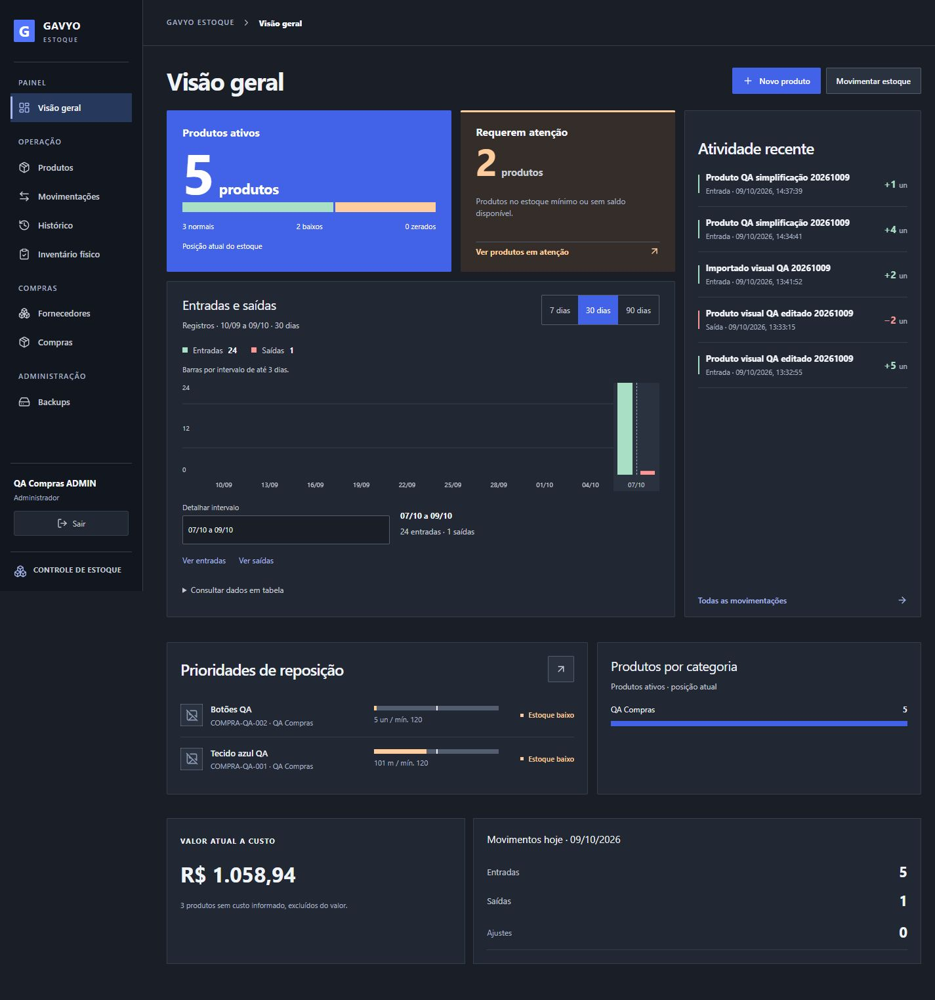
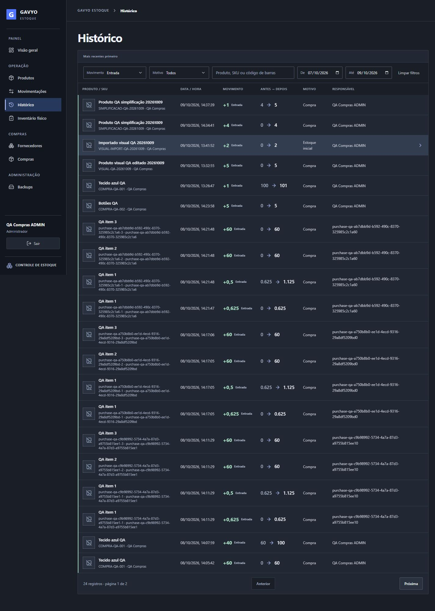
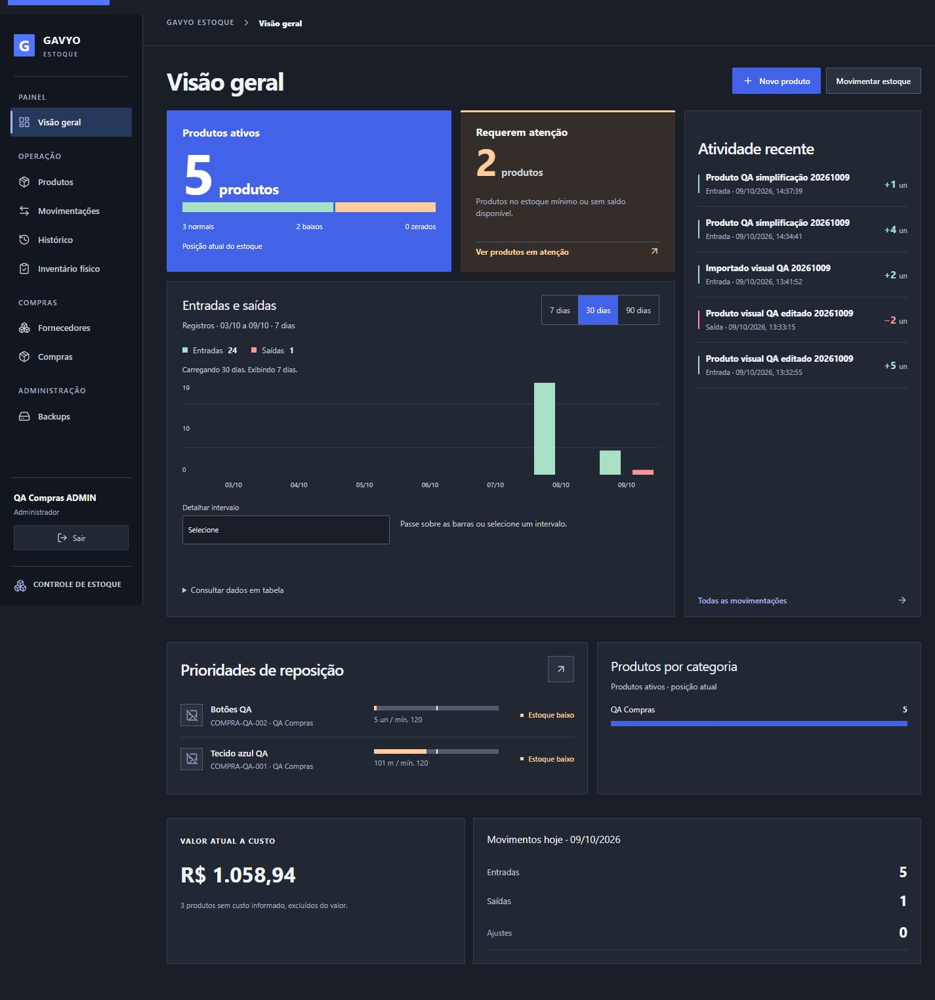
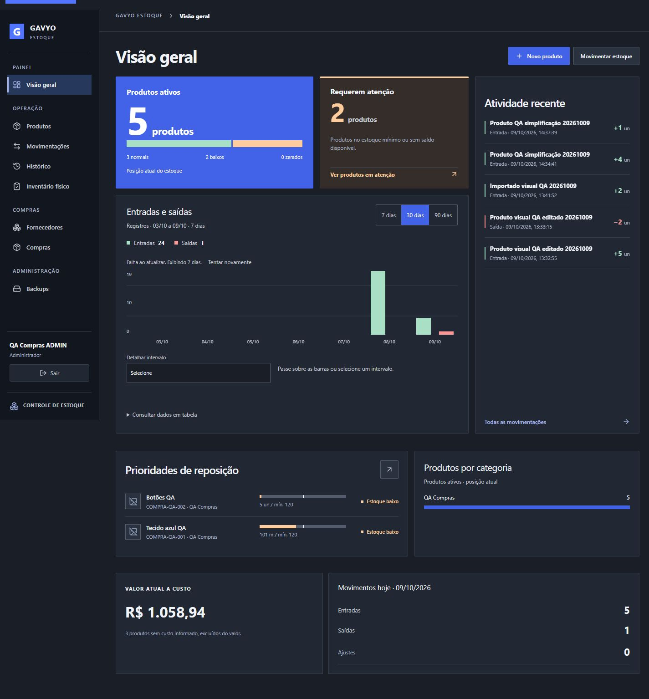
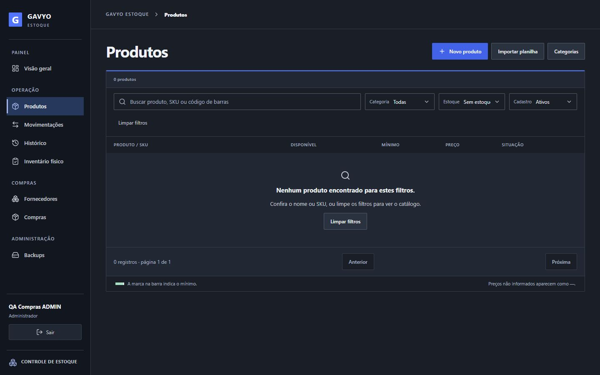
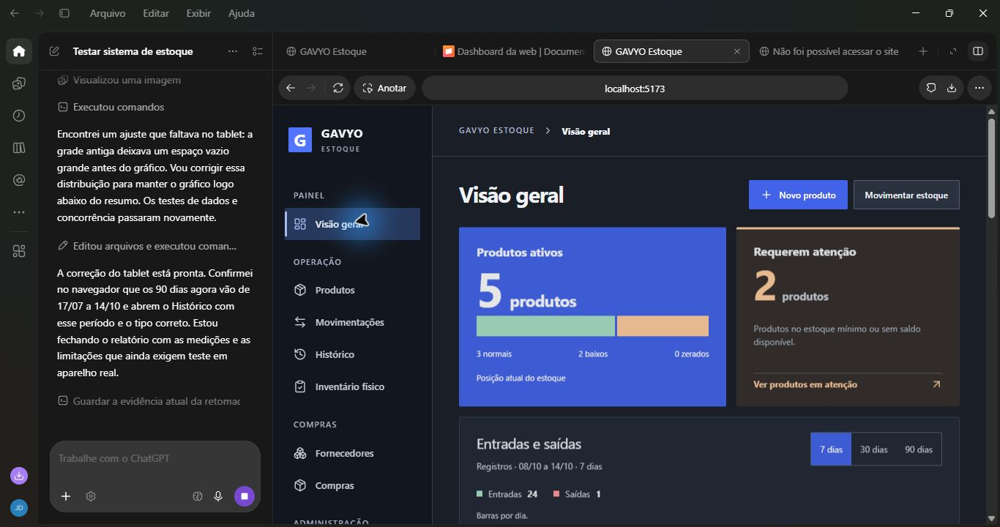

Dashboard interativa
Antes e depois, com dados locais de QA. Capturas de 09/10/2026; entrega conferida em 14/10/2026. O sistema em funcionamento usa as datas atuais. A grade do tablet recebeu uma correção adicional em 14/10; a captura histórica de 1024px antecede esse ajuste.
Abrir o sistema · Relatório de validação e performance
- Selecione 7, 30 ou 90 dias.
- Passe pelas barras com o mouse ou Tab; Escape fecha os detalhes.
- No celular, escolha “Detalhar intervalo” e toque em “Ver entradas” ou “Ver saídas”.
- Clique na distribuição do estoque ou em uma categoria para abrir Produtos filtrados.
- Abra a tabela diária para conferir cada dia.
Detalhes por intervalo

Histórico filtrado

Carregamento preserva o período anterior

Erro com opção de tentar novamente

Categoria sem saldo abre catálogo vazio

Conferência atual — 14/10/2026, janela do aplicativo
